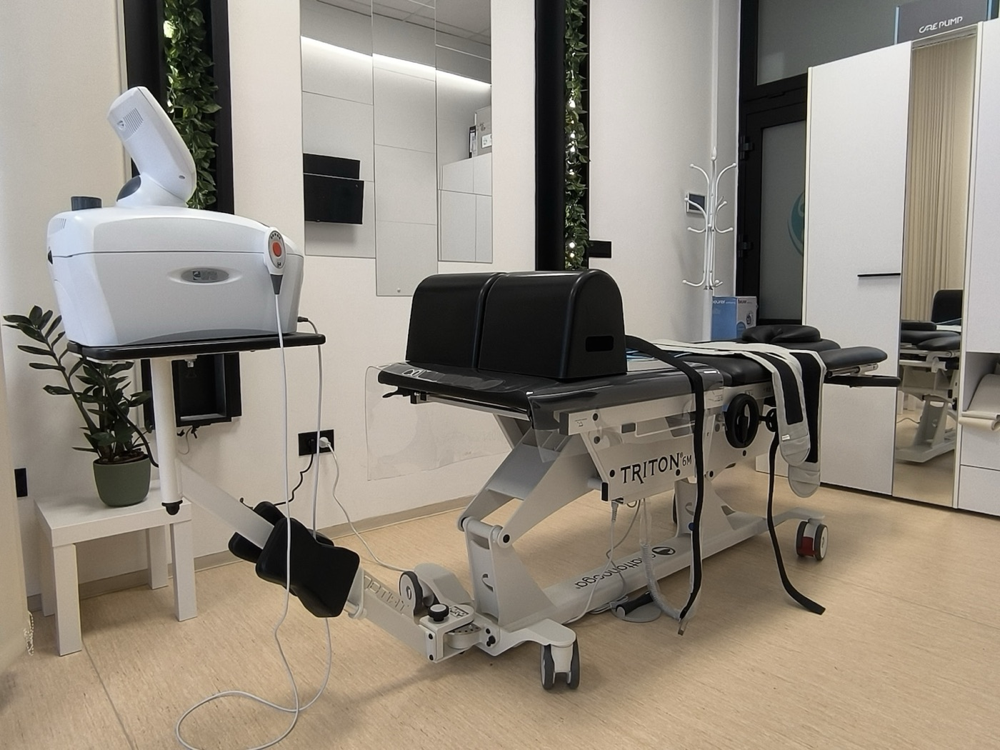
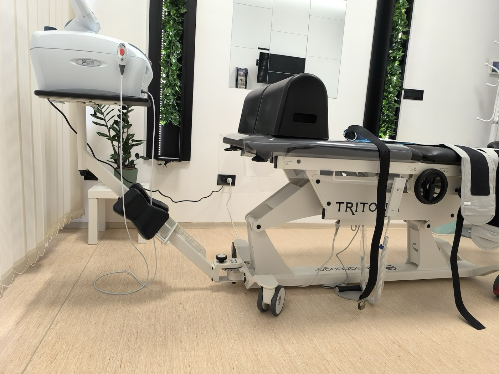

Trakciona terapija kičme
Kontrolisano aksijalno povlačenje smanjuje pritisak u intervertebralnom disku, otvara intervertebralne otvore i rasterećuje koren nerva. Tretman je individualno doziran i odvija se na programabilnom stolu Chattanooga Triton 6M, sa statičkim i intermitentnim protokolima posebno za vrat i krsta.

Kako deluje
Smanjenje intradiskalnog pritiska
Nežno aksijalno povlačenje smanjuje pritisak u disku i poboljšava difuziju tečnosti i nutrijenata u jezgro diska.
Otvaranje foramen i faseta
Otvaraju se intervertebralni otvori i facetni zglobovi, smanjujući mehaničku kompresiju nervnog korena i iritaciju.
Relaksacija paravertebralne muskulature
Refleksni mišićni spazam popušta, smanjuje se nadraživanje senzitivnih struktura i bol u pokretu.
Najbolje indikacije za Triton 6M
Stanja kod kojih je programabilna trakcija na ovom uređaju klinički najefikasnija — uz prethodni pregled i isključenje kontraindikacija.
Vratna kičma (cervikalna)
- Cervikalna diskus hernija sa radikulopatijom (C5–C6, C6–C7)
- Cervikobrahijalgija — radikularni bol i parestezije u ruci
- Cervikalna spondiloza sa foraminalnim suženjem
- Disfunkcija facetnih zglobova vrata
- Cervikogene tenzione glavobolje (nakon pregleda)
- Hroničan bol u vratu sa ograničenom pokretljivošću
Lumbalna kičma (krsta)
- Lumbalna diskus hernija (L4–L5, L5–S1), sa ili bez radikulopatije
- Lumboishijalgija (išijas) — bol koji se širi niz nogu
- Lumbalna spinalna stenoza, subakutna i hronična faza
- Degenerativna bolest diska (DDD)
- Sindrom facetnih zglobova
- Hroničan diskogeni bol u krstima
Parametri tretmana
Polazne vrednosti — finalno doziranje uvek prilagođavamo dijagnozi, fazi i toleranciji pacijenta.
- Cervikalna sila
- 5–15 kg
- Lumbalna sila
- 25–50% telesne težine
- Režim
- statički ili intermitentni
- Trajanje sesije
- 10–20 minuta
- Frekvencija
- 2–3 puta nedeljno
- Tipičan kurs
- 8–12 tretmana

Šta da očekujete
Pre tretmana radimo kratak pregled — anamneza, neurološki status, provera kontraindikacija. Postavlja se odgovarajući pojas (cervikalni ili lumbalni), pacijent leže na sto, povlačenje počinje postepeno. Senzacija je prijatno istezanje, ne bol. Mnogi osete olakšanje već u prvih nekoliko tretmana; trajan efekat se gradi tokom celog kursa, uz vežbe i savete za posturu koje dobijate uz tretman.
Kada trakcija nije pogodna
Trakcija se ne sprovodi kod nestabilnih fraktura kičme, izrazite osteoporoze, akutne spinalne infekcije ili tumora, post‑operativnih stanja u ranoj fazi, trudnoće, kao i kod nekontrolisanog visokog krvnog pritiska ili teške kardiovaskularne bolesti. Pre tretmana proveravamo „crvene zastavice" i, kada je potrebno, tražimo nalaze snimanja (MR, RTG).